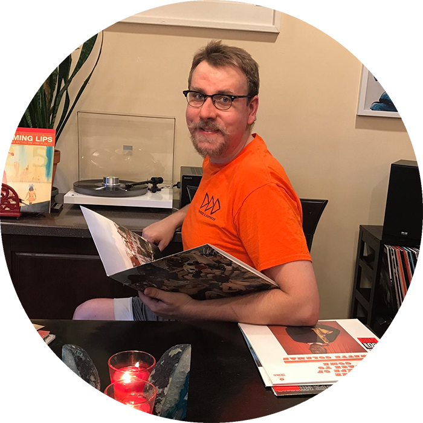
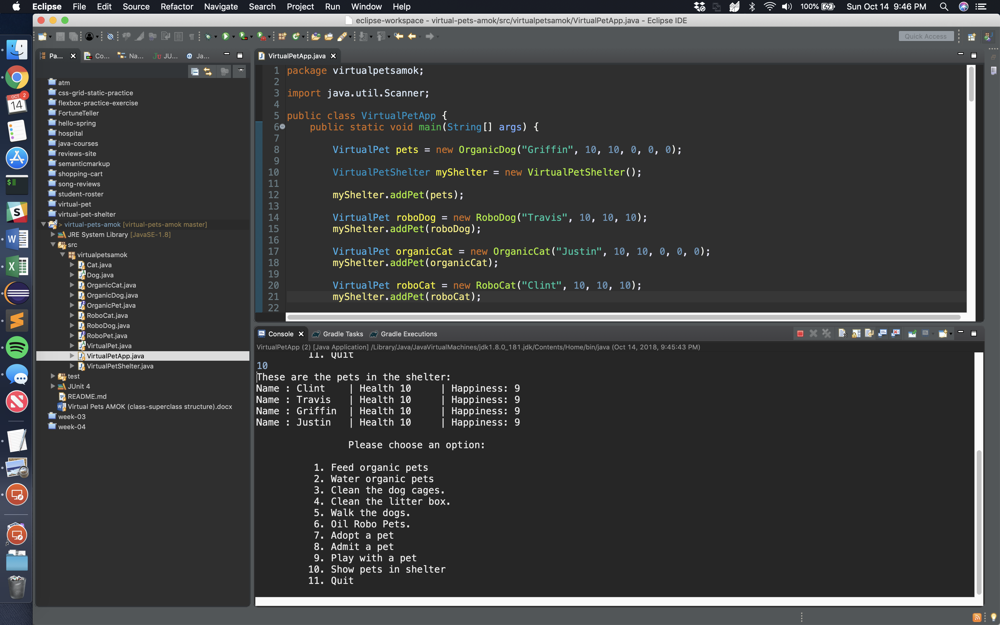
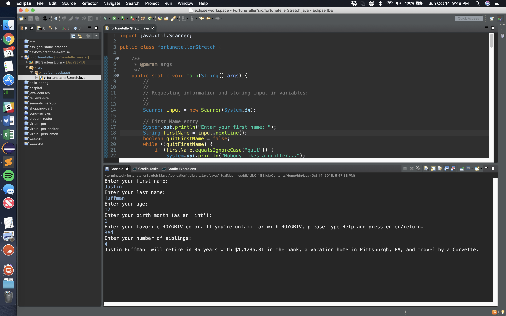
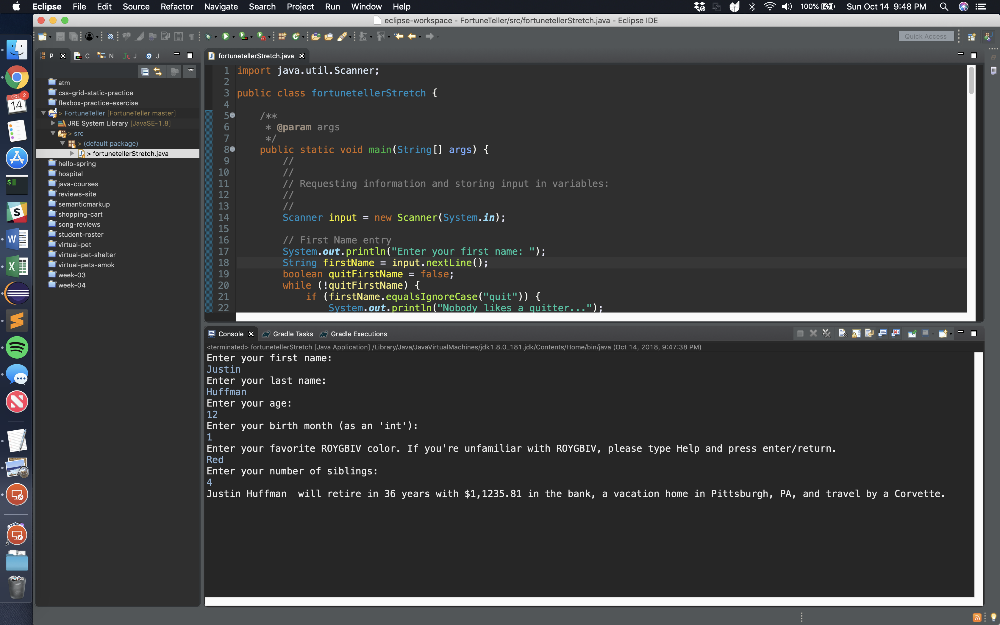

About Me
Tech passionate since birth, the first instance I remember of getting in “big trouble,” was from taking apart my parents’ brand-new ED Betamax VCR at age 8 to “see how it worked.” From building my first computer to play Doom in 1994, to learning about routers, hubs, and switches in the late 90s to host LAN parties with my friends, video games drove my passion for all things tech. This fervent affinity for all things has led to many rewarding opportunities, building, maintaining, and developing networks, websites, programs, and apps. When I’m not working in technology you can find my playing on and in it. Weekends find me overclocking and benchmarking my PC for the fastest speeds possible to coding and wiring an Arduino to open my garage door with my phone: I love to tinker. Recesses from all things digital include spinning vinyl from my collection (usually jazz), enjoying a home or craft brew, or embarking a tasty food adventure around town.
Skills
Web and Software Development
- Java
- Spring Boot
- TDD
- HTML5
- CSS3
- Javascript
- jQuery
- MVC
- Git/Github
- Database and SQL / Object Relational Mappers
Information Technology
- Cisco Certified Entry Network Technician (CCENT)
- Vendors: Cisco, Dell, HP, Force10, Extreme, Foundry, Brocade, Netscreen, Firebox, 3Com, Force 10, Juniper, Linksys, Watchguard, Polycom
- Devices: Routers, Switches, Access Points, VoIP, Servers, Firewalls, ASA/UTMs
- Windows Server: 2000 - 2012 R2. Active Directory/Exchange
- Mac OS X/macOS including macOS Server: 10.6 - 10.13
2- Linux: Ubuntu 12-14 LTS, CentOS 7.0
- Technologies: DNS, DHCP, VPN, VLAN, Layer 2 and 3 switching, MPLS, EIGRP, 802.11x, SSH, FTP.
Projects

 

Virtual Pets Amok
Song Reviews
Fortune Teller